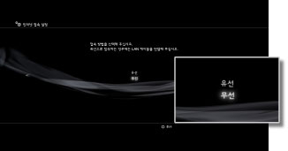
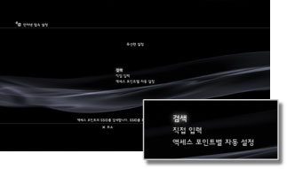
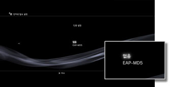
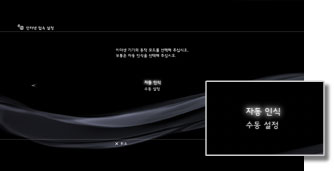
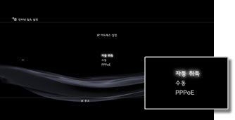
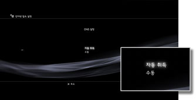
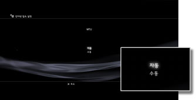
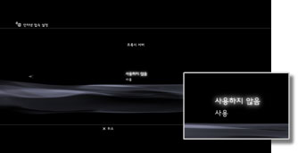
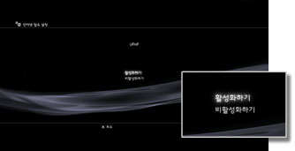

인터넷 접속 설정(고급 설정)
기본 설정으로 인터넷에 접속할 수 없을 경우 필요에 따라 설정을 변경해 주십시오. 사용하시는 인터넷 환경에 맞게 필요에 따라 각 항목을 설정합니다.
1. |
|
|---|---|
2. |
[인터넷 접속 설정]을 선택합니다. |
3. |
[간단]을 선택합니다. |
 (설정)에서
(설정)에서  (네트워크 설정)을 선택합니다.
(네트워크 설정)을 선택합니다.접속 방법
인터넷에 접속하기 위한 방법을 설정합니다. 무선랜을 탑재한 PS3™에서만 선택할 수 있는 설정입니다.

| 유선 | LAN 케이블을 사용해 유선으로 접속합니다. |
|---|---|
| 무선 | 무선랜을 사용해 무선으로 접속합니다. |
무선랜 설정
액세스 포인트의 SSID를 설정합니다. 이 설정은 무선랜 기능이 탑재된 PS3™에서만 사용할 수 있습니다.

| 검색 | 가까이에 있는 액세스 포인트를 검색합니다. 액세스 포인트의 SSID를 모를 경우 이 설정을 선택합니다. 가까이에 있는 액세스 포인트가 검색되고 SSID 및 보안 설정에 대한 정보가 표시됩니다. |
|---|---|
| 직접 입력 | 키보드로 SSID를 직접 입력하여 액세스 포인트를 지정합니다. SSID를 알고 있는 경우 이 설정을 선택합니다. |
| 액세스 포인트별 자동 설정 | 액세스 포인트의 자동 설정 기능을 사용합니다. 대응 지역의 PS3™에서만 선택할 수 있는 설정입니다. 자동 설정에 대응하는 액세스 포인트를 사용하실 때 선택합니다. 화면의 지시에 따라 조작하면 필요한 설정이 자동으로 완료됩니다. 대응하는 액세스 포인트에 대해서는 액세스 포인트 판매 업체에 문의해 주십시오. |
무선랜 보안 설정
액세스 포인트의 암호화 키를 설정합니다. 이 설정은 무선랜 기능이 탑재된 PS3™에서만 선택할 수 있습니다.

| 없음 | 암호화 키를 설정하지 않습니다. |
|---|---|
| WEP | 암호화 키를 설정합니다. 다음 화면에서 암호화 키를 입력할 수 있습니다. 입력된 암호화 키는 [*]로 표시됩니다. |
| WPA-PSK/WPA2-PSK |
인증 설정
한국에서 판매되는 PS3™에서만 선택할 수 있으며 무선랜 기능이 탑재된 PS3™에서만 사용할 수 있습니다.

| 없음 | 인증 정보를 설정하지 않습니다. |
|---|---|
| EAP-MD5 | 공중 무선랜 서비스를 사용할 경우의 인증 정보를 설정합니다. 다음 화면에서 유저 ID와 비밀번호를 입력합니다. 상세한 사항은 공중 무선랜 서비스 제공자가 제공하는 자료 등을 참조해 주십시오. |
이더넷 동작 모드
이더넷 데이터 전송 속도와 조작 방법을 설정합니다. 일반적으로 [자동 인식]을 선택합니다.

| 자동 인식 | 기본적인 설정이 자동으로 선택됩니다. |
|---|---|
| 수동 설정 | 이더넷의 통신 속도와 동작 방법을 수동으로 설정합니다. |
IP 어드레스 설정
인터넷에 접속할 때 IP 어드레스를 취득하는 방법을 설정합니다.

| 자동 취득 | DHCP 서버에서 할당한 IP 어드레스를 사용합니다. 다음 화면에서 DHCP 서버의 호스트명을 설정할 수 있습니다. |
|---|---|
| 수동 | IP 어드레스를 수동으로 설정합니다. 다음 화면에서 IP 어드레스, 서브넷 마스크, 디폴트 라우터, 기본 DNS 및 보조 DNS에 대한 값을 입력할 수 있습니다. |
| PPPoE | PPPoE를 사용하여 인터넷에 접속합니다. 다음 화면에서 유저 ID와 비밀번호를 설정할 수 있습니다. |
DHCP
DHCP 호스트명을 설정합니다. 보통은 [설정하지 않음]을 선택합니다.
| 설정하지 않음 | DHCP 호스트명을 설정하지 않습니다. |
|---|---|
| 설정 | DHCP 호스트명을 설정합니다. |
DNS 설정
DNS 서버를 설정합니다.

| 자동 취득 | DNS 서버 주소를 자동으로 취득합니다. |
|---|---|
| 수동 | DNS 서버 주소를 수동으로 설정합니다. |
MTU
데이터를 전송할 때 MTU 값을 구성합니다. 일반적으로 [자동]을 선택합니다.

| 자동 | MTU 값을 자동으로 설정합니다. |
|---|---|
| 수동 | 한 번에 보낼 수 있는 최대 데이터 패킷 크기(바이트)를 지정합니다. |
프록시 서버
사용할 프록시 서버를 설정합니다.

| 사용하지 않음 | 프록시 서버를 사용하지 않습니다. |
|---|---|
| 사용 | 프록시 서버를 사용합니다. 다음 화면에서 프록시 서버 주소와 포트 번호를 설정할 수 있습니다. |
UPnP
UPnP(Universal Plug and Play)의 활성화 여부를 설정합니다. 일반적으로 [활성화하기]를 선택합니다.

| 활성화하기 | UPnP를 활성화합니다. |
|---|---|
| 비활성화하기 | UPnP를 비활성화합니다. |
알아두기
[비활성화하기]로 설정할 경우 음성/화상 대화나 게임의 통신 기능을 사용할 때 상대방과의 통신이 제한될 수 있습니다.